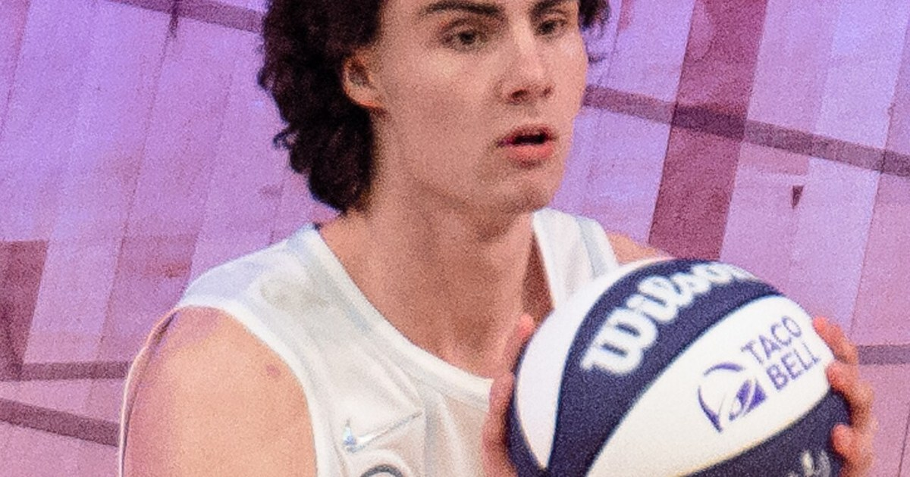

TSL Bets: Josh Giddey OVER 9.5 assists vs. Pacers (+112)
Josh Giddey is averaging 11.2 assists over his last five games, and tonight's Pacers-Bulls game carries the highest total on the NBA slate. The play: Giddey OVER 9.5 assists (+112, DraftKings).

The game slip
Indiana Pacers (6-13) at Chicago Bulls (6-12)
Saturday, 8:00 PM ET — United Center, Chicago, IL
• Spread: Bulls -2.5
• Total: 234.5 — the highest total on tonight's NBA slate
• Moneyline: Bulls -145 / Pacers +120
• Odds source: ESPN / DraftKings board, November 28
Injury report — Pacers: G Tyrese Haliburton OUT (hamstring). G T.J. McConnell OUT (hamstring). G Ben Sheppard OUT (knee).
Injury report — Bulls: G Norman Powell OUT (hamstring). F Caleb Wilson OUT (hand). F Jalen Smith PROBABLE (illness). F Noa Essengue PROBABLE (thumb). Giddey's role is untouched — he is Chicago's primary ball-handler and that does not change tonight.
Storylines: Neither team defends much and both play fast, which is why this total sits at 234.5, clear of everything else on the board tonight. Indiana arrives thin at guard with Haliburton, McConnell and Sheppard all out, so the Pacers' perimeter defense is held together by reserves. Giddey runs everything for Chicago: he is the Bulls' leader in assists and the offense flows through his drive-and-kick game, and against a Pacers team missing its three best guards, the passing lanes should be open all night.
The bet
Josh Giddey OVER 9.5 assists (+112, DraftKings)
Why this prop
The recent form clears the line. Giddey is averaging 10.5 assists over his last 10 games and 11.2 over his last five, and the Dimers model projects 10.2 assists tonight with a 6.9% edge at the +112 price. The matchup does the rest: the highest total on the slate means the most possessions and the most scoring chances to assist on, and Indiana is missing the guards who would normally pressure the ball. Plus money on a facilitator whose last-five average sits 1.7 assists above the line is exactly the shape this column looks for.
The honest caveats
The mean is flattered by one 22-assist outlier — Giddey has actually cleared 9.5 in only four of his last 10, and his median game is 8.5 assists, so this is a plus-money swing on form and matchup, not a high-floor play. If Chicago's shooters go cold, the assists dry up no matter how well he passes. And a blowout either way can cost him fourth-quarter minutes. The edge is real, but it is an edge, not a lock.
The record
TSL Bets is 23-47 in November, 27-68 all-time.
If you or someone you know has a gambling problem, call 1-800-GAMBLER.
Sources
• NBA Player Props Today — November 28, 2026 (Dimers)
• Josh Giddey props (OddsLoft)
• NBA injury report (PredictionEngine)
• Giddey's last-10 (10.5) and last-five (11.2) assist averages and the Dimers 10.2 projection come from Dimers and OddsLoft, November 28. Photo: Josh Giddey, by Erik Drost, CC BY 2.0, via Wikimedia Commons.